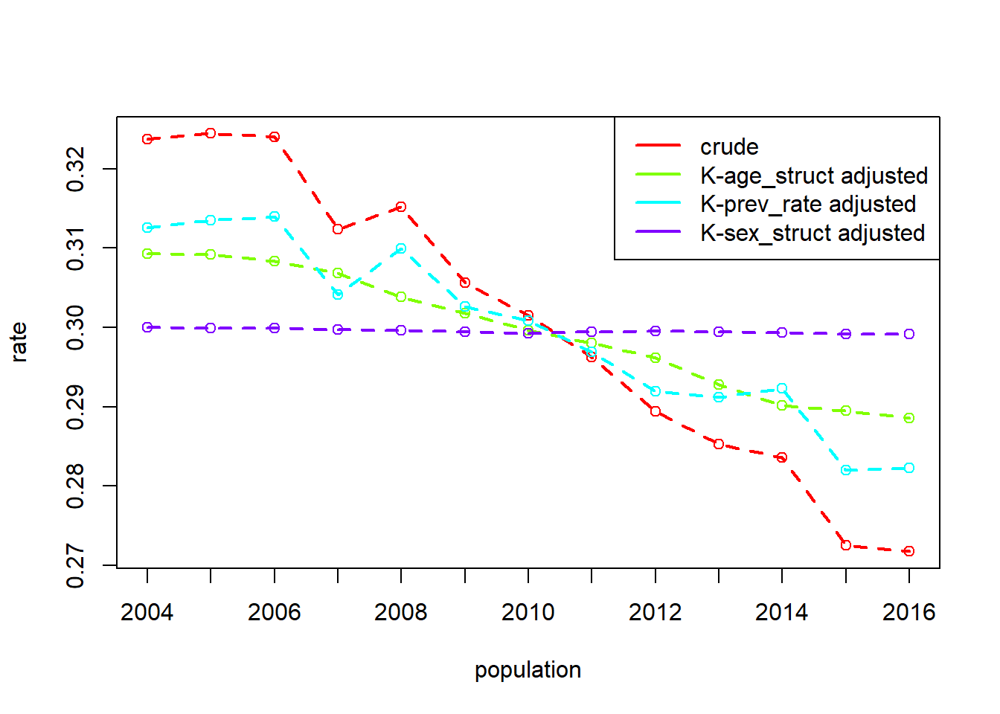

reconv2 <-
reconv |>
filter(year %in% c(2004, 2016)) |>
group_by(year, Age) |>
summarise(
convicted_population = unique(convicted_population),
offenders = sum(offenders),
reconvicted = sum(reconvicted)
)Practical 2
Example: Reconvictions by age group
Question 1
The prevalence of reconvictions among Scottish offenders (i.e., the proportion of offenders who have a reconviction) has decreased from 32% in 2004 to 27% in 2016.
The data, broken down by sex and age-group, can be found along with the DasGuptR package. For these questions, we’re going to combine the sexes, and aggregate up to just the age-group. You can do this with:
Using the data above, calculate the crude rate each year, using two different calculations:
- \[\frac{\text{Total Nr Reconvicted}}{\text{Total Nr Convicted Population}}\]
- \[\sum\limits_{\text{group }i}\frac{\text{Nr Reconvicted}_i}{\text{Nr Offenders}_i} \cdot \frac{\text{Nr Offenders}_i}{\text{Total Nr Convicted Population}}\]
Question 2
We’re going to decompose the crude rate difference between 2004 and 2016, into the contributions from:
- the reconvictions rate within a given age-group
- the share of the convited population that belong to a given age-group
Create new variables representing these components.
Question 3
The variables created in the previous question are essentially “rates” and “weights”.
Decompose the crude rate difference between 2004 and 2016 into the contributions from these two parts.
For each population we have a vector of each of these, so we need to ensure we use a rate function that gives the summary value ratefunction = "sum(rate * weight)".
Question 4
Now conduct the same decomposition, but instead of using the age-group population share as a “factor” in the decomposition, utilise the id_vars and crossclassified arguments to indicate the rate as being aggregated over these different subgroups.
(You should get the same output)
Example 2: Reconvictions by age and sex
Question 5
Returning to the reconvictions data where we have it split by both age-group and sex, and we have it for all populations between 2004 and 2016.
One way to capture the different combinations of age and sex breakdowns is to simply combine them:
reconv3 <-
reconv |>
mutate(
agesex = interaction(Age,Sex)
)
head(reconv3) year Sex Age convicted_population offenders reconvicted reconvictions
1 2004 Female 21 to 25 49351 1650 576 1145
2 2004 Female 26 to 30 49351 1268 420 786
3 2004 Female 31 to 40 49351 2238 558 963
4 2004 Female over 40 49351 1198 212 361
5 2004 Female under 21 49351 1488 424 858
6 2004 Male 21 to 25 49351 8941 3285 6330
prev_rate agesex
1 0.3490909 21 to 25.Female
2 0.3312303 26 to 30.Female
3 0.2493298 31 to 40.Female
4 0.1769616 over 40.Female
5 0.2849462 under 21.Female
6 0.3674086 21 to 25.MaleDecompose the crude rate difference between 2004 and 2016 into the contributions from these group-specific rates and the group-specific weights (much like in the previous questions). Then do the decomposition while separating contributions of age composition from those of sex composition.
You can do all of this including all years in the standardisation, and pulling out the specific years in dg_table(pop1 = 2004, pop2 = 2016).
Question Optional: 6
To help understand things, let’s start changing our data to see what happens.
The code below will add an extra 1000 Females to the convicted population for each year (200 in each age group). So in 2005 we have added 1000 Females, in 2006 we added 2000, 2007 we add 3000, and so on. We keep the rate of reconvictions the same within the age-sex groups (we can update the reconvicted variable just for completeness):
reconv4 <-
reconv |>
mutate(
extra_F = ifelse(Sex=="Female",200*(year-2004),0),
offenders = offenders + extra_F,
reconvicted = offenders * prev_rate
)How will the plot below change when we run it on this fake data?

choose your own
Scotland’s Homelessness Deaths
Scotland tracks the numbers of homeless deaths each year.
It also tracks the number of applicants assessed as homeless each year.
Both of these measures are provided broken down into four coarse age groups.
Homeless Deaths per 100,000 people
One way in which we could choose to approach this question is to decompose the number of homeless deaths per 100,000 people in the population.
This crude rate has moved from 4 deaths per 100,000 people in 2017, to 5.5 in 2024.
We might consider decomposing this into the relative contributions of the prevalence of homelessness and the rate of deaths in the homeless population, alongside the changes in the age distribution of the overall scottish population:
\[ \small \begin{align} \text{Homelessness Death Rate} &= \sum\limits_{\text{agegroup }i} \frac{\text{Nr Deaths}_i}{\text{Nr People}_i} \cdot 100,000\\ &= \sum\limits_{\text{agegroup }i}\frac{\text{Nr Homeless}_i}{\text{Nr People}_i} \cdot \frac{\text{Nr Deaths}_i}{\text{Nr Homeless}_i} \cdot 100,000 \\ \end{align} \]
There is an important note here that the number of homeless here is a measure that doesn’t represent the entire homeless population, but rather those that are currently known to the system in a given year. As such it captures the mortality risk of the population that has engaged with homelessness applications, and not the mortality risk of the entire homeless population.
An alternative approach we might choose here is to decompose the total number of homeless deaths. The benefit here is that we can include the raw total population size as a contributing factor:
\[ \small \text{Total Homelessness Deaths} = \sum\limits_{\text{agegroup }i} \text{Nr People} \cdot \frac{\text{Nr People}_i}{\text{Nr People}} \cdot \frac{\text{Nr Homeless}_i}{\text{Nr People}_i} \cdot \frac{\text{Nr Deaths}_i}{\text{Nr Homeless}_i} \\ \]
If our conversation is focused on the raw totals (homeless deaths are up from 164 in 2017 to 231 in 2024), this may be preferable as we can provide the % due to population growth, the % due to an aging demographic, the % due to changes in applications, and the % due to the change in mortality risk per application.
Data are available at https://josiahpjking.github.io/sgsss_std_decomp/data/hdeaths.csv

Scotland’s Recycling
In the first workshop, one example saw the decomposition of the “kg recycled waste per person”, to separate out contributions of overall waste production and recycling efficiency:
\[ \begin{align} \text{Recycled Tonnes per Person} &= \frac{\text{Recycled Waste}}{\text{Nr People}} \\ \quad \\ &= \frac{\text{Total Waste}}{\text{Nr People}} \cdot \frac{\text{Recycled Waste}}{\text{Total Waste}} \\ \end{align} \]
An alternative would be to consider decomposing the total tonnage that is recycled, and include the population size as another factor:
\[
\begin{align}
\text{Recycled Tonnes} &= \text{Recycled Waste} \\
\quad \\
&= \text{Nr People} \cdot \frac{\text{Total Waste}}{\text{Nr People}} \cdot \frac{\text{Recycled Waste}}{\text{Total Waste}} \\
\end{align}
\]
SEPA provides data allowing for either of these decompositions for every year from 2011 onwards, providing us with a good example for decomposition across a time series.
The data are available at https://josiahpjking.github.io/sgsss_std_decomp/data/recycling_timeseries.csv

UK’s Occupation-adjusted Gender Pay Gap
The Gender Pay Gap is typically quantified as the difference in Female earnings as a percentage of Male earnings.
A common discussion point of this measure is that Males and Females tend to work in different occupations, and different occupations tend to pay different amounts. The obvious question then is whether there continues to exist a difference in earnings between Males and Females should the proportions working in each occupation be held constant. This differentiates the a direct bias (Females being paid less than Males for the same work) from a longstanding systemic bias (Females being discouraged from the higher earning occupations).
Note, we are continuing to talk about population level quantities here, and not individuals. Looking at a system level quantities can’t tell us about discrimination against individuals, although it can help to point us at where to look.
In 2025 across the UK, Mean Hourly Earnings for Females was £20.7, and for Males was £24.5, resulting in a pay gap of 15.5%
By considering Male and Female earners as different “populations”, we can consider their population level mean hourly earnings as a weighted sum of occupation level mean hourly earnings:
\[ \text{Mean Hourly Earnings} = \sum\limits_{\text{occupation }i}\frac{\text{Nr Workers}_i}{\text{Nr Workers}} \cdot \text{Mean Hourly Earnings}_i \]
Using Das Gupta’s methodology, we can calculate the occupation-adjusted earnings for each population.
These are the counterfactual quantities of “what would the mean earnings be for Ms and Fs if they had the same proportions of workers in each occupation?”
We can then use these quantities to calculate an occupation-adjusted pay gap.
https://josiahpjking.github.io/sgsss_std_decomp/data/gender_pay_occ.csv
Global Proportion of Energy from Renewable Sources
Ember-Energy provides estimated yearly energy production, capacity, and demand for the vast majority of countries in the world, broken down by the energy source.
There are various common ways to group of energy sources:
- Non-clean: Gas, Coal, Other fossil
- Clean: Solar, Wind, Hydro, Bioenergy, Other renewables, Nuclear
- Renewable: Solar, Wind, Hydro, Bioenergy, Other renewables
This makes for many potentially useful decompositions. For example, we may be interested in decomposing the proportion of energy generated from Wind & Solar:
\[ \small \begin{align} \text{Wind & Solar Share} &= \frac{\text{Electricity Generated from Wind & Solar}}{\text{Electricity Generated}} \\ \quad \\ &=\sum\limits_{\text{country }i}\frac{\text{from W&S}_i}{\text{from Renewables}_i} \cdot \frac{\text{from Renewables}_i}{\text{from Clean Energy}_i} \cdot \frac{\text{from Clean Energy}_i}{\text{Total}_i} \\ \end{align} \]
Over the past decade, Wind & Solar has gone from generating ~5% of all electricity to generating ~15%. Our decomposition will allow us to investigate the extent to which this is driven by changes in electricity generation from Wind & Solar in comparison to other renewables, or by generating energy from renewables in general as opposed to from nuclear, or from a general move away from fossil fuels.
The data are available at https://josiahpjking.github.io/sgsss_std_decomp/data/elec_gen.csv.
To do this decomposition globally, we need to have the same countries at all years. 2012 to 2022 will work as a range for this.
You could alternatively do this decomposition for a single country, and use whatever years we have for that country.
You can do a similar decomposition, not of changes in energy production, but of the changes in infrastructure, because the same breakdowns of data are available for installed capacity. Those data can be found at https://josiahpjking.github.io/sgsss_std_decomp/data/elec_cap.csv. It would even be possible to join these two data sources, allowing us to decompose the total TWh of fossil fuel generated electricity into:
\[ \text{Fossil Fuel TWh} = \frac{\text{Fossil Fuel TWh}}{\text{Fossil Fuel Capacity}} \cdot \frac{\text{Fossil Fuel Capacity}}{\text{Total Capacity}} \cdot \text{Total Capacity} \]

Scotland’s Business 5 year Survival Rate
Scotland provides information on the number of business established in a given year, as well as the number that have survived 1 year, 3 years, and 5 years. It also provides this information split across various industries (Production, Construction, Motor, Retail etc.. ).
The 5-year survival rate for business dropped from 42% in 2013 to 38% in 2019.
This could be because of a changing composition of businesses across industries, or it could be due to it being harder for businesses to survive. Because a business that survives 5 years needs to have, by definition, survived 3 years first, we can decompose the 5-year survival rate into short-term, medium-term and longer term survival:
\[ \small \begin{align} \text{5 year survival rate} &= \frac{\text{Nr Survived after 5yrs}}{\text{Nr Established}} \\ \quad \\ \text{5 year survival rate} &= \sum\limits_{\text{sector }i}\frac{\text{Nr Established}_i}{\text{Nr Established}} \cdot \frac{\text{Nr Survived 1yr}_i}{\text{Nr Established}_i} \cdot \frac{\text{Nr Survived 3yr}_i}{\text{Nr Survived 1yr}_i} \cdot \frac{\text{Nr Survived 5yr}_i}{\text{Nr Survived 3yr}_i} \end{align} \] Data can be found at https://josiahpjking.github.io/sgsss_std_decomp/data/businesssurvival.csv

Scotland’s Heroin Deaths 2020 vs 2024
The total number of deaths in Scotland involving heroin was 254 in 2010, and 327 in 2024. The number of deaths involving drugs has gone from 485 to 1017.
To decompose the total number of heroin deaths, we might find it useful to include the total population size in our decomposition, because in a larger population we would expect more deaths.
From the available data, we could perform a decomposition of the total number of heroin deaths in Scotland into contributions from:
- total population size (a bigger populations results in more deaths, even with the same death rate)
- population composition (with heroin deaths more common in certain age groups, a population for which that group makes up a larger proportion will result in greater numbers of deaths)
- drug mortality rates (numbers of heroin deaths might increase due to more drugs deaths generally)
- heroin mortality fraction (the extent to which drug deaths involve heroin, vs some other drug)
\[ \small \text{Nr Deaths Involving Heroin} = \sum\limits_{\text{age }i,\text{ sex }j} \frac{\text{Nr People}_{ij}}{\text{Nr People}} \cdot \text{Nr People} \cdot \frac{\text{Nr Drug Deaths}_{ij}}{\text{Nr People}_{ij}} \cdot \frac{\text{Nr Heroin Deaths}_{ij}}{\text{Nr Drug Deaths}_{ij}} \] Data for the various numbers required for this decomposition are available at https://josiahpjking.github.io/sgsss_std_decomp/data/heroin.csv
Age-Sex Standardised Death Rates, Scotland 1981-2024
A very common use of standardisation is to create age-sex-standardised rates. Populations differ considerably in their age distributions. A good way of visualising this is via “population pyramids”.
Play around at populationpyramid.net (e.g., see how Italy differs from Kenya).
The same age-sex mix of the population for a given country will also change over time. With rates of deaths varying across different age-sex groups, it can be problematic to compare crude death rates across a long time frame. In 1981 the death rate was 12.3 deaths per 1000 people. In 2024, it was 11.2.
If a larger proportion of the 2024 population is older, then this actually hides the improvements made over the last 40 years.
\[ \begin{align} \text{Death Rate} &= \frac{\text{Nr Deaths}}{\text{Nr People}} \\ \quad \\ &= \sum\limits_{\text{age }i,\text{ sex }j} \frac{\text{Nr People}_{ij}}{\text{Nr People}} \cdot \frac{\text{Nr Deaths}_{ij}}{\text{Nr People}_{ij}} \end{align} \]
Data can be found at: https://josiahpjking.github.io/sgsss_std_decomp/data/scotland_deaths_1981_2024.xsv
Doing this process on the entire set of 43 years will take a lot of time, so you could consider filtering to every 5th year at the outset.
Alternatively, here’s one we made earlier:
load(url("https://josiahpjking.github.io/sgsss_std_decomp/data/deaths_age_sex_full.rdata"))If you want some fun, the code below will create an animation of the population pyramid in Scotland for the last 40 years:
Code
library(gganimate)
popdat <- read_csv("https://josiahpjking.github.io/sgsss_std_decomp/data/scotland_deaths_1981_2024.csv")
popdat |>
mutate(
n = ifelse(sex=="Males",-n,n)
) |>
ggplot(aes(x=age,y=n,fill=sex))+
geom_col()+
coord_flip()+
transition_time(year) +
labs(title = "Year: {round(frame_time)}")
Age-Sex-LAA Standardised Birth Rates, Scotland 1991-2024
\[ \begin{align} \text{Birth Rate} &= \frac{\text{Nr Births}}{\text{Nr People}} \\ \quad \\ &= \sum\limits_{\text{age }i,\text{ sex }j,\text{ area } k} \frac{\text{Nr People}_{ijk}}{\text{Nr People}} \cdot \frac{\text{Nr Births}_{ijk}}{\text{Nr People}_{ijk}} \end{align} \]
TODO JK upload data.
TODO add any further examples